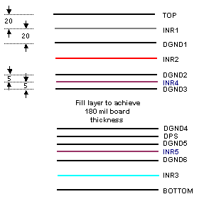

Varying dimensions of dielectric layers
The figure below shows the stack-up of the experimental high-speed DUT board.
The high-speed layers INR1 and INR2 are the two uppermost signal layers below top ground, the high-speed layer INR3 is just above bottom ground. The low-speed layers are INR4 and INR5 (between INR2 and INR3).
The stack-up cross-section shown below is only approximately dimensioned and not to scale, but it clearly shows that the dielectric layer above and below INR1, INR2, and INR3 is thicker than the other dielectric layers.

To minimize crosstalk the following rules were applied in this design example:
- Low-speed traces must not be routed on the same layer as high-speed traces.
- Low-speed traces can have smaller cross-sections.
Functional changes
- Introduced before SmarTest 6.3.2